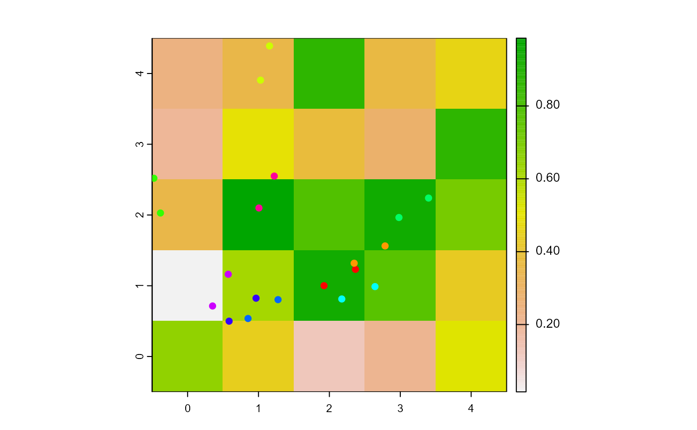

face.RdSet the turtles' heading towards agents2.
face(turtles, agents2, world, torus = FALSE) # S4 method for agentMatrix,matrix face(turtles, agents2, world, torus = FALSE)
| turtles | AgentMatrix object representing the moving agents. |
|---|---|
| agents2 | Matrix (ncol = 2) with the first column "pxcor" and the second column "pycor" representing the patches coordinates, or AgentMatrix object representing the moving agents, or Matrix (ncol = 2) with the first column "x and the second column "y" representing locations coordinates. |
| world | WorldMatrix or worldArray object. |
| torus | Logical to determine if the |
AgentMatrix representing the turtles with updated headings.
The number of agents/locations in agents2 must be equal to 1 or
to the length of turtles.
If torus = FALSE, world does not need to be provided.
If torus = TRUE and the distance from one turtles to
its corresponding agent/location agents2 is smaller around the
sides of the world than across it, then the direction to the agent/location
agents2 going around the sides of the world is given to the turtle.
If a turtle is facing its own location, its heading does not change.
Wilensky, U. 1999. NetLogo. http://ccl.northwestern.edu/netlogo/. Center for Connected Learning and Computer-Based Modeling, Northwestern University. Evanston, IL.
https://ccl.northwestern.edu/netlogo/docs/dictionary.html#face
https://ccl.northwestern.edu/netlogo/docs/dictionary.html#facexy
w1 <- createWorld(minPxcor = 0, maxPxcor = 4, minPycor = 0, maxPycor = 4, data = runif(25)) t1 <- createTurtles(n = 10, coords = randomXYcor(w1, n = 10)) plot(w1)points(t1, col = of(agents = t1, var = "color"), pch = 16)t1 <- face(turtles = t1, agents2 = cbind(x = 0, y = 0)) t1 <- fd(turtles = t1, dist = 0.5) points(t1, col = of(agents = t1, var = "color"), pch = 16)